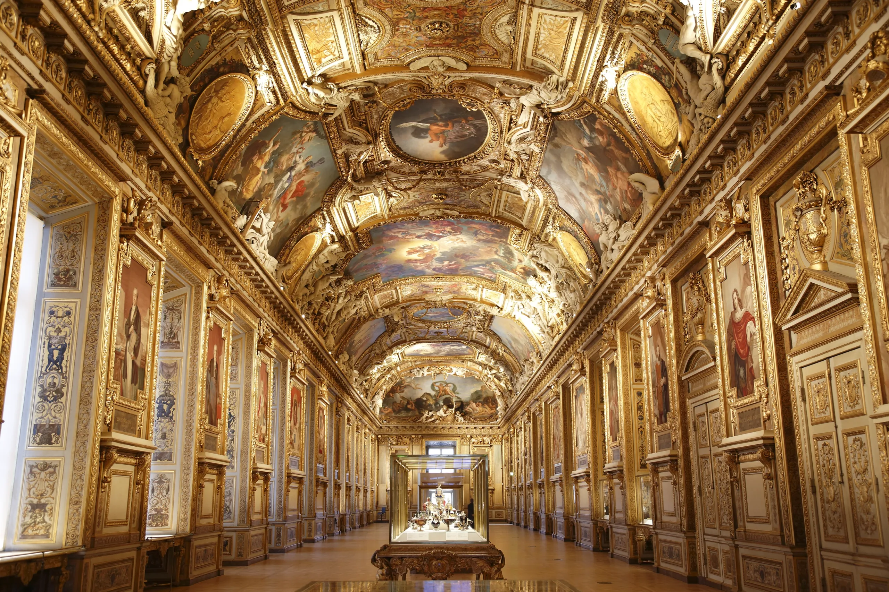

France
France through the ages
- Ancient Gaul:France was originally called Gaul and was inhabited by Celtic tribes. It was later conquered by the Romans.
- Middle Ages:France became a powerful kingdom ruled by kings. Castles, knights, and the Catholic Church were very important.
- French Revolution (1789):The French people overthrew the monarchy. This led to ideas of freedom, equality, and democracy.
- Napoleon Bonaparte:Napoleon became emperor and expanded French influence across Europe. His rule ended after military defeat.
- Modern France:France became a republic and developed into a modern state. Today, it is an important cultural and political power in Europe.
Famous sights
Eiffel Tower:

The Eiffel Tower is the most famous landmark in France. Visitors can enjoy views of Paris from the top.
Louvre Museum:
The Louvre is the largest art museum in the world. It is home to the Mona Lisa.
Notre-Dame Cathedral:

Notre-Dame is a historic Gothic cathedral in Paris. It is famous for its architecture.
French food
- Croissant: A croissant is a buttery pastry eaten for breakfast. It is very popular in France.
- Baguette: A baguette is long, crispy French bread. Many people buy it fresh every day.
- Crepes: Crepes are thin pancakes with sweet or savory fillings. They are common street food.
- Cheese: France is famous for its many kinds of cheese. Cheese is often eaten after meals.
- Ratatouille: Ratatouille is a vegetable dish from southern France. It is healthy and tasty.
Tips for travelers
- Greetings: Always say “Bonjour” when entering a shop or café. It is polite and expected.
- Meal Times:Meals are long and relaxed. Do not rush when eating.
- Public Transport:Trains and metros are easy to use. Remember to validate your ticket.
- Museum Days: Many museums are free on the first Sunday of the month. This is a great way to save money.
- Pickpocket Awareness: Pickpocketing can happen in busy tourist areas. Keep your bags and valuables secure at all times.